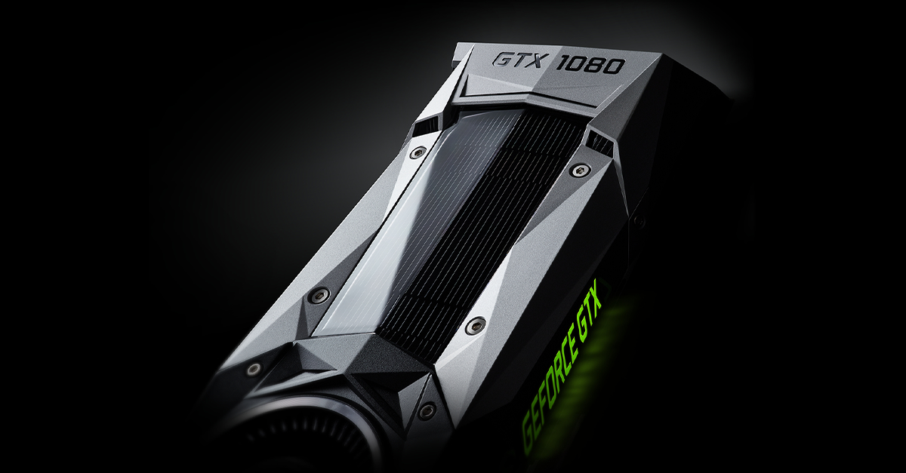

Nvidia GeForce GTX 1080 GPU Review
Our Rig
- Motherboard: Asus Z170-Deluxe
- Processor: Intel Core i5-6600K (not overclocked)
- RAM: Corsair Vengeance 2666MHz, 16GB DDR4
- Cooler: Corsair H60 liquid cooler
- PSU: Corsair CX750M
- SSD: Samsung 850 EVO
- OS: Windows 10 Pro 64-bit
Performance Across Various Games
Shadow of Mordor
Shadow of Mordor is loaded with environmental effects including weather, fire and explosions. Its built-in benchmark is short but packs in all the most challenging effects the game can serve up. I ran the game at maximum graphical settings.
It was here that the GTX 1080 really started to stretch its advantage over its predecessors. While all three passed with flying colours at Full HD, the GTX 1080 delivered an excellent average frame rate of 54.9fps at 4K – 20% faster than the GTX 980 Ti’s 45.9fps and the GTX 980’s 32.7fps. Minimum fps is also important here, and the GTX 1080 never dropped below 42fps during even the most challenging portions of the benchmark.
| GPU | Minimum FPS | Maximum FPS | Average FPS |
|---|---|---|---|
| GTX 980 | 24 | 48 | 33 |
| GTX 980ti | 38 | 66 | 46 |
| GTX 1080 | 50 | 70 | 60 |
GTA V
GTA V is a technically challenging game with a huge number of things going on at once, challenging both the graphics card and processor of any gaming system. The built-in benchmark tests the game in various ways, and I paid attention to the flying and driving portion, which are by far the most difficult.
I turned every setting up to maximum, with all settings on their highest and all anti-aliasing and visual effects as high as they would go. All three performed commendably at Full HD, but they all struggled a little at 4K.
This test was not in any of the GPUs’ favour, so I also ran it with a few of the rather unnecessary effects switched off, and both the 980 Ti and 1080 were considerably more stable while the game still looked great, and both were able to exceed 50fps averages in this instance.
| GPU | Minimum FPS | Maximum FPS | Average FPS |
|---|---|---|---|
| GTX 980 | 14 | 28 | 20 |
| GTX 980ti | 21 | 33 | 27 |
| GTX 1080 | 25 | 40 | 33 |
Benchmarking Video
Should You Buy?
The GTX 1080 has lived up to its billing in terms of basic performance, which is encouraging when you consider that many of its features can’t even be used yet by the average consumer.
In raw performance terms, it’s a huge step up from the previous-generation GTX 980, although at this point the two are barely comparable due to the huge price and performance gulf.
As it stands, it’s the most powerful consumer graphics card you can buy, with AMD yet to show its hand in 2016. The 1080 also represents good value, even if the price is higher than the previous generation. This is (nearly) gaming perfected.